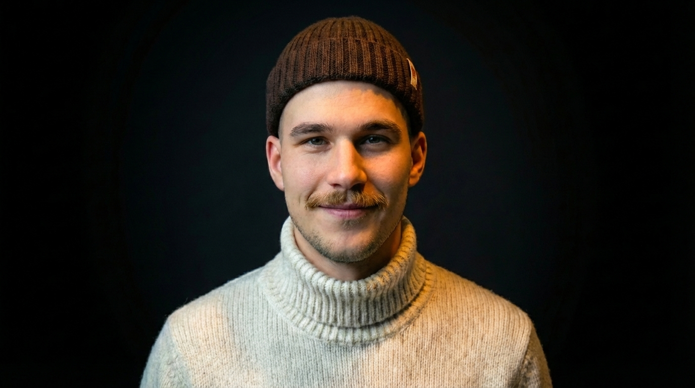

NeuroVision turns design guesswork into behavior-modeled decisions.
NeuroVision is a predictive cognitive modeling platform for design evaluation and optimization. Upload a visual stimulus (ad, landing page, packaging, product visual), and NeuroVision predicts early attention, simulates how different audiences interpret the stimulus, and generates improved design variants aligned with evidence-based UX principles.
Identify hierarchy, competing elements, overloaded areas, and first-fixation probabilities.
Model trust, message understanding, brand fit, and cultural framing across regions/personas.
Produce improved variants, resize across platforms, and create from scratch when needed.
The Team Behind NeuroVision
Meet the people building the future of design intelligence.

Patrik is a computational neuroscience researcher exploring how neuroscience and biophysics can inspire the next generation of intelligent systems. He is currently working at the Chinese Academy of Sciences with multimodal artificial intelligence and complex systems. His research focuses on neural decoding, brain-computer interfaces, and computational models of perception. He has extensive applied research experience with consumer behaviour, attention and eye tracking. At NeuroVision, he leads the scientific vision, combining neuroscience-driven AI with predictive models of human attention.

Frantisek is a full-stack software engineer specializing in scalable architectures and high-performance systems. After starting his career in digital marketing, he transitioned into software engineering driven by a deep interest in data-driven behaviour and algorithms that shape decision-making. At NeuroVision, he leads platform architecture and core product development, building the infrastructure that enables AI-driven visual attention prediction and data-driven design evaluation.
Tereza combines expertise in economics, business development, and design to translate complex technology into impactful products. With over nine years of experience across branding, marketing, and creative direction, she focuses on bridging science and real-world application. She previously worked as an art director at a tech startup and later pursued a master's degree in Innovation Management. At NeuroVision, she leads product strategy and design.